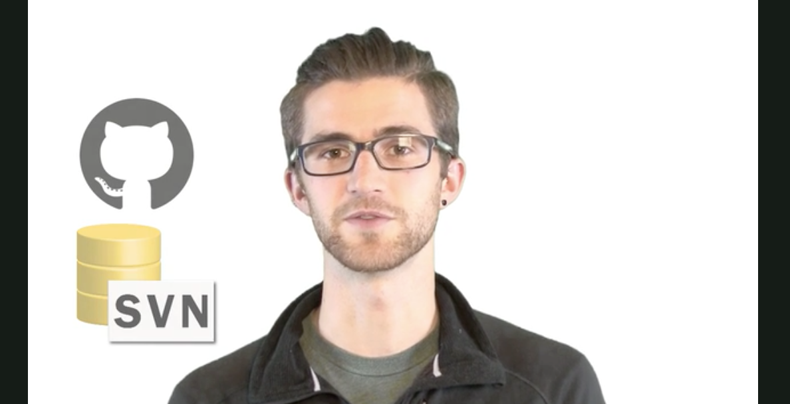
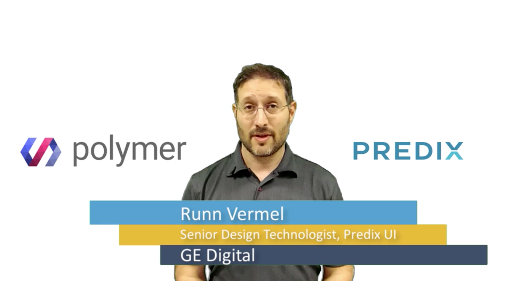
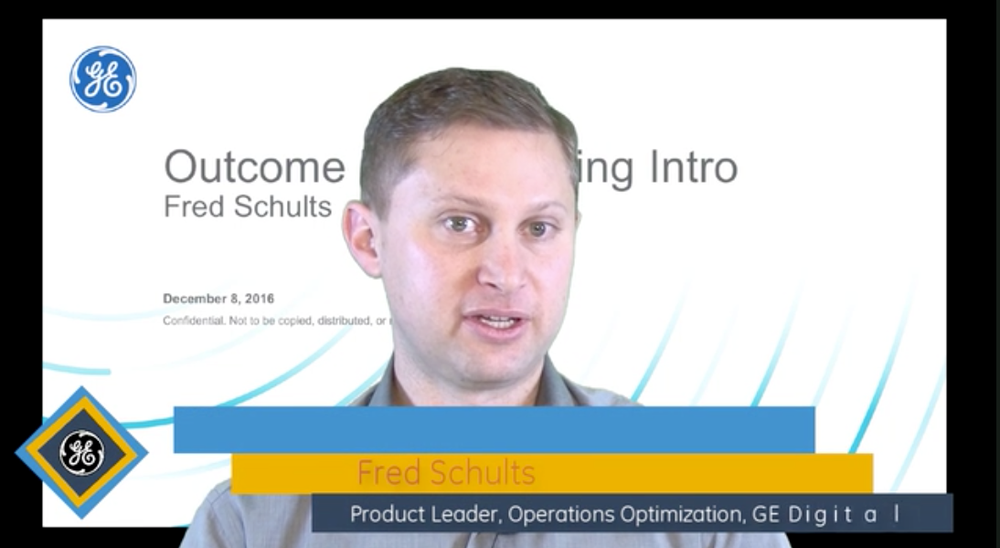
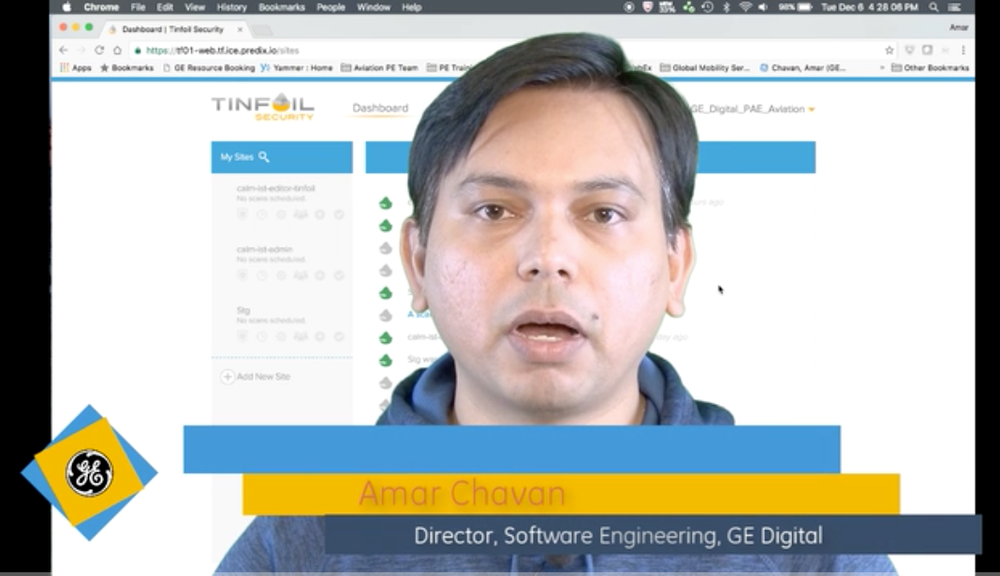
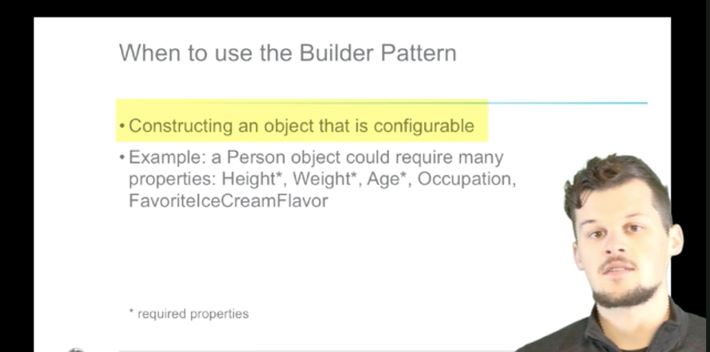
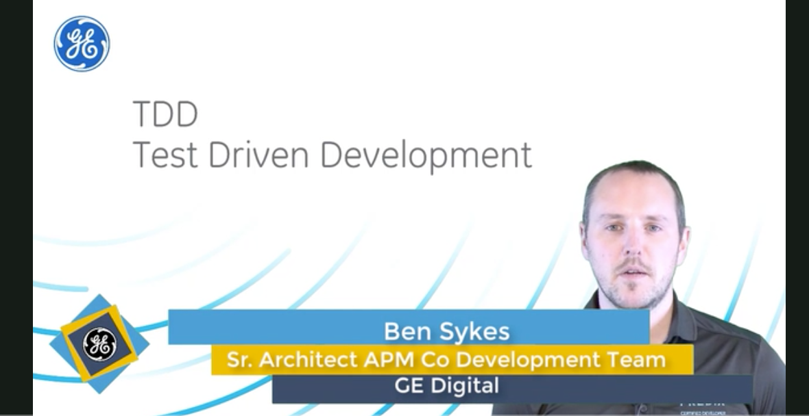

At GE Digital, I designed and built a dedicated technical learning studio that enabled engineers and subject matter experts to create professional-quality educational content for a global workforce.
Rather than treating the studio as a production space, I approached it as a strategic capability that made technical expertise easier to capture, share, and scale across the organization. I led the design of the physical studio, selected and configured the production equipment, established recording workflows, and partnered with engineering subject matter experts to produce instructional videos, demonstrations, webinars, and live learning events. The studio became a central resource for transforming specialized engineering knowledge into high-quality learning experiences that could reach teams across the enterprise.
The examples below represent a selection of the instructional videos and technical learning content produced through the studio, demonstrating how thoughtfully designed production environments can help organizations preserve expertise, accelerate knowledge sharing, and support learning at scale.






Related Case Study
Developer Certification & Technical Enablement
Technical audiences needed clearer pathways into platform development, product analytics, and internal process knowledge.